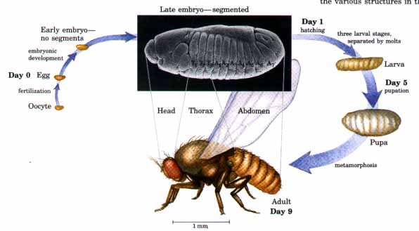
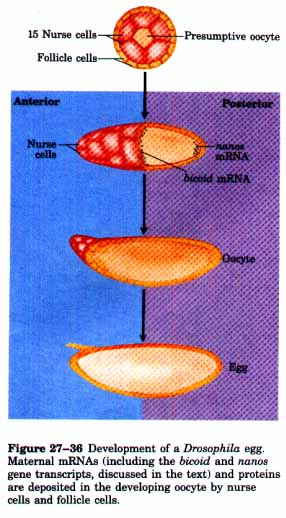
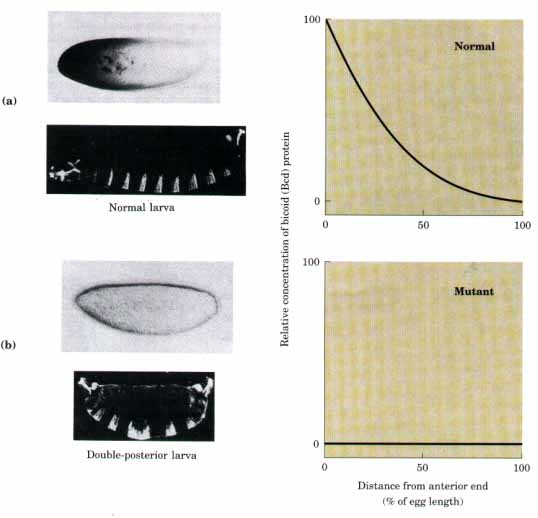
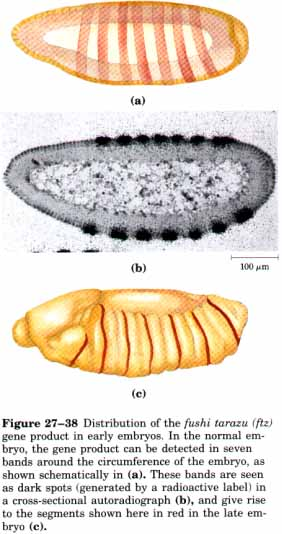
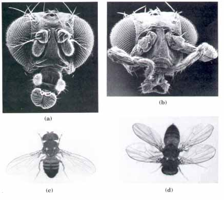

The transitions in morphology and protein composition observed in the development of a zygote into a multicellular animal or plant with many distinctly different tissues and cell types involve tightly coordinated changes in the expression of the organism's genome. More genes are expressed during early development than in any other part of the life cycle. For example, there are about 18,500 different mRNAs in the sea urchin oocyte, but only about 6,000 different mRNAs in the cells of typical differentiated tissues. The mRNAs present in the oocyte give rise to a cascade of events that not only regulate the expression of many genes but also determine where and when the gene products will appear in the developing organism.
Several organisms have emerged as important model systems for the study of development. These include yeasts, nematodes, fruit flies, sea urchins, frogs, chickens, and mice. Our discussion will focus on the development of fruit flies. The emerging picture of the molecular events that occur in development is particularly well advanced in fruit flies and can be used to illustrate patterns and principles of general significance.

Figure 27-35 The life cycle of the fruit fly Drosophila melanogaster. In complete metamorphosis, the adult insect is radically different in form from its immature stages; this process requires extensive "remodeling" during development. By the late embryonic stage, segments have formed from which the various structures in the adult fly will develop.
The fruit fly, Drosophila melanogaster, has a complex life cycle that includes complete metamorphosis in its progression from an embryo to an adult (Fig. 27-35). Among the most important characteristics of the embryo are its polarity (the anterior and posterior, dorsal and ventral parts of the animal are readily distinguished) and its metamerism (the embryo body is made up of serially repeating segments, each with characteristic structural patterns). The adult fly is also segmented, and groups of these segments are organized into a head, thorax, and abdomen (Fig. 27-35). Each segment of the adult thorax has a different set of appendages. These patterns are all under genetic control. A variety of pattern-regulating genes have been discovered that dramatically affect the organization of the body, and analysis of these has provided important clues about how development is regulated.
The egg is formed from an oocyte surrounded by 15 nurse cells and a layer of follicle cells (Fig. 27-36). As the egg cell is formed prior to fertilization, mRNAs and proteins originating in the nurse and follicle cells are deposited in it; some of these play a critical role in development.
Three major classes of pattern-regulating genes specify the basic features of the Drosophila embryo's body and function in successive stages of development. (1) Maternal genes are expressed in the unfertilized egg (oocyte), and the resulting maternal mRNAs remain dormant until fertilization. These provide most of the proteins needed in very early development. Some of the proteins encoded by these mRNAs direct the spatial organization of the developing embryo at early stages, establishing its polarity. (2) Segmentation genes are transcribed from the cellular genome after fertilization and direct the formation of the proper number of body segments. There are at least three subclasses of segmentation genes that act at successive stages: gap genes divide the developing embryo into four broad regions, pair-rule genes define seven stripes, and segment polarity genes define 14 stripes that become the 14 segments present in a normal embryo. (3) Homeotic genes are expressed still later and affect the unique characteristics of individual body segments.
More than 40 regulatory genes in these three classes are known; the number is growing rapidly. They direct the development of an adult fly with a head, thorax, abdomen, the proper number of segments, and the correct appendages on each segment. Although embryogenesis takes about a day to complete, all of these genes are activated in the first 4 hours. Some of the mRNAs and proteins are present for no more than 6 to 8 min at a specific point during this period. Not surprisingly, many of these genes code for transcription factors that affect the expression of successive genes in a kind of developmental cascade.

Maternal Genes Within the Drosophila egg, the maternal gene products establish two axes: anterior-posterior and dorsal-ventral. Before fertilization, these genes have therefore defmed the regions in the radially symmetric egg that will develop into the head/abdomen and topl bottom of the adult fly. A key characteristic of some of the maternal mRNAs is an asymmetric distribution in the egg. As the first cell divisions occur, the new cells inherit different amounts of these maternal mRNAs as a result of this asymmetry, and this in turn sets the new cells on different developmental paths. The products of these maternal mRNAs evidently regulate the expression of other pattern-regulating genes, resulting in a cascade of expressed genes. The specific pattern and sequence in which the genes are expressed differs from one cell lineage to the next and orchestrates the development of each adult structure.A well-studied example is the bicoid (bcd) gene product of Drosophila. The mRNA from this gene is synthesized by nurse cells and deposited in the unfertilized egg near its anterior pole. During early development, this mRNA is translated and the bicoid protein diffuses through the cell, creating a concentration gradient radiating out from the anterior pole (Fig. 27-37). The bicoid protein is a transcription factor that affects the expression of a number of segmentation genes. The amounts of bicoid protein present in various parts of the developing embryo determine the cells in which a number of other genes are subsequently expressed. Changes in the shape of the bicoid protein gradient have dramatic effects on the body pattern in the resulting fly. Lack of bicoid protein results in the development of an embryo with no head or thorax and two abdomens. Another maternal mRNA, transcribed from a gene called nanos, has a similar role but is localized in the posterior pole of the egg. The dorsal-ventral axis in the egg is established by the combined action of at least 12 genes.
 |
Figure 27-37 (a) A micrograph of an immunologically stained Drosophila egg, showing distribution of the bicoid (bcd) gene product. The graph measures stain intensity. This distribution is essential for normal development of the anterior structures of the animal. If the bcd gene is not expressed, the resulting embryo has two posteriors, as shown. |
| Segmentation Genes Expression of the gap genes is generally regulated by the products of one or more maternal genes. The bicoid protein, for example, appears to activate expression of a gap gene called hunchback. At least some of the gap genes are themselves transcription factors that affect the expression of other segmentation and in (b).homeotic genes. One well-characterized segmentation gene is fushi tarazu (ftz), which belongs to the "pair-rule" subclass. When this gene is lost, the embryo develops seven double-wide segments instead of the normal 14. The mRNAs and proteins derived from the normal ftz gene accumulate in a striking pattern of seven stripes that encircle the posterior two-thirds of the embryo (Fig. 27-38). The stripes correspond to the positions of segments that develop later, and which are eliminated if ftz function is lost. The expression of pattern-regulating genes such as ftz (and bcd, expressed earlier in development) establishes a kind of chemical blueprint for the body plan that precedes the actual formation of a body structure. |  |
Homeotzc Genes Loss of homeotic genes by mutation or deletion causes the appearance of a normal appendage or body structure at an inappropriate body position. An important example is the ultrabithorax (Ubx) gene. When Ubx function is lost, the first abdominal segment develops incorrectly, having the structure of the third thoracic segment. Other known homeotic mutations cause the formation of an extra set of wings, or two legs at the position in the head where the antennae are normally found (Fig. 27-39).
| The homeotic genes span long regions of
DNA. The Ubx gene, for example, is 77,000 base
pairs in length and contains introns that are as long as
50,000 base pairs. Transcription of this gene takes
nearly one hour. The delay this imposes on Ubx gene
expression is believed to be a timing mechanism involved
in the temporal regulation of subsequent steps in
development. The precise nature of many of the events directed by these proteins, and in many cases the biochemical function of the proteins themselves, are unknown. A likely DNA-binding domain has been identified in a number of these proteins, however, which suggests that they are regulatory proteins. This domain contains 60 amino acids and is called the homeodomain because it was found first in homeotic genes. The DNA sequence encoding this domain is called the homeobox. It is highly conserved and has been identified in proteins from a wide variety of organisms. The DNA-binding segment of the domain is related to the helix-turn-helix motif. |
 Figure 27-39 The effects of mutations in homeotic genes. (a) Normal Drosophila head. (b) Drosophila homeotic mutant (Antennapaedia) in which antennae are replaced by legs. (c) Normal Drosophilcz body structure. (d) Homeotic mutant (Bithorax) in which a segment has developed incorrectly to produce an extra set of wings. |
The identification of structural determinants with identifiable molecular functions is the first step in understanding the molecular events underlying development. As more genes and their protein products are discovered, the biochemical side of this vast puzzle will slowly come together.